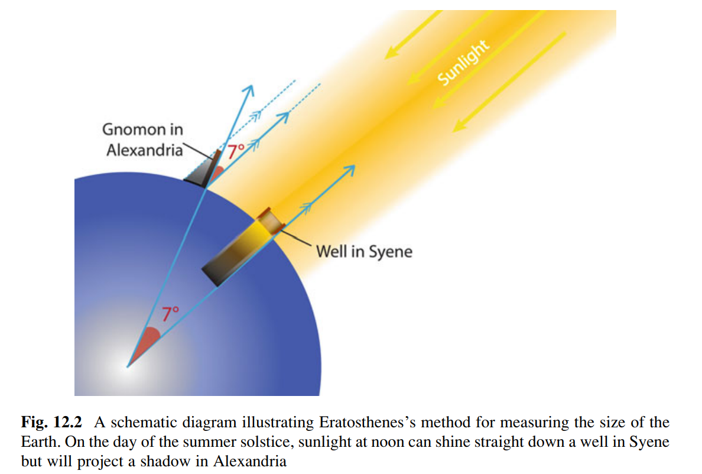
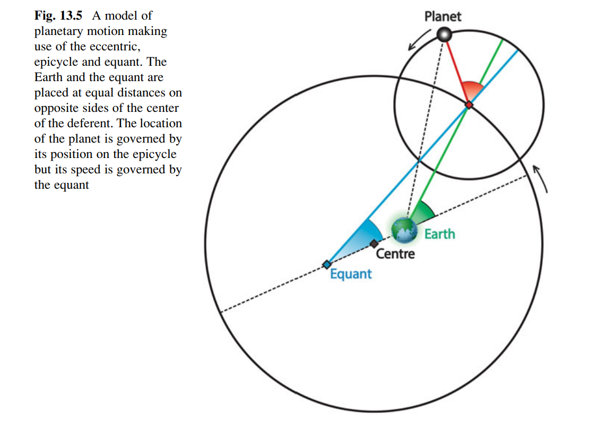

今夜星光闪闪（贰）
我们抵达了一个关键里程碑：太阳，月亮，星空以及五颗行星都已经以或此或彼的形式整合进了地心说模型。尽管有种种不合理之处，但混沌无序的宇宙不再被视为不可理解的存在，我们在物理世界的一片空无中找到了自己的立足之地。
地球的存在是如此坚实，以至于我们以一种形而上的态度将其置于宇宙的中心。当永恒静止被证实为不存在之后，我们又将何去何从？不管怎样，现在先让我们尽情庆贺吧：这的确是人类理性登上神坛之前的一次伟大胜利！
This article is a self-administered course note.
It will NOT cover any exam or assignment related content.
The Mystery of Uneven Seasons
People of ancient Greece.
[公元前六世纪 - 四世纪] 朴素的观察与推理。
- Thales of Miletus (米利都的泰勒斯). The first person to seek rational explanations for observed facts, at a time when superstition was the prevailing worldview.
- Anaximander (阿纳克西曼德). Disc-shaped Earth covered by a spherical heaven.
- Anaximenes (阿纳克西美尼). Stars fixed on a transparent sphere which rotated around the Earth.
- Parmenides of Elea (埃利亚的巴门尼德). Earth is spherical & Moon received its light from the Sun.
- Pythagoras of Samos (萨摩斯的毕达哥拉斯). Phosphorus (启明) and Hesperus (长庚) were the same object, Venus. Musica universalis (音乐宇宙论).
[公元前四世纪 - 三世纪] 形而上学发轫。
- Plato (柏拉图). The Sun, the Moon and the planets are spherical because the sphere is the perfect shape.
- Aristotle (亚里士多德). The Earth was at rest at the center of the Universe and the Universe was finite and changeless. Also, the motions of the celestial bodies were uniform and circular.
Rejection of a self-spinning Earth.
[公元前四世纪 - 三世纪]
- Hicetas (of Syracuse) 与 Herakleides (of Pontus) 提出太阳与星星的昼行运动是由地球的自转引起的。
- Aristarchus (of Samos) 提出日心说宇宙 (heliocentric Universe).
这两个观点在现代看来都比地心说先进；但在当时却遭到了驳斥。其中最著名的反对者是 Ptolemy the Alexandria (亚历山德拉的托勒密)，他在其著作 Almagest (天文学大成) 中列举了诸多理由 (以当时的科技水平来看确实很有说服力！)。
- 既然地球以如此快的速度自转，为什么我们感觉不到？
- 人在地球上跳跃，为何落下后仍能回到原来的位置？
- 如果地球围绕太阳旋转，为何星星的位置并不随季节变化？（这一点 Aristarchus 做出了回答：地球的轨道半径相比其与星星的距离是可忽略的。我们知道他是对的！）
柏拉图的学生，Eudoxus of Cnidus (尼多斯的欧多克索斯) 对行星的 tropical periods 进行了测量：根据该数据，经典地心说模型 (Classical geocentric model) 把行星由内而外安排在一系列同心圆轨道上：Earth, Moon, Mercury, Venus, Sun (Ecliptic), Jupiter, Saturn.
由于 Venus 与 Mercury 与太阳有着一致的 tropical period (一年)，Herakleides of Pontus 提出将这两颗行星安排在绕太阳旋转的轨道上。这一改良模型被称为埃及系统 Egyption System。
Uneven Seasons.
Hipparchus of Nicaea (尼西亚的依巴古) 是希腊化时代最伟大的天文学家。他测量了 synodic month 与 tropical year 的长度，并粗略计算了地月距离与地球半径之比。
除此之外，他还通过测量发现季节的长度并不一致；从冬至点到下一个春分点（冬季）所需的时间是 94.5 天，但从夏至点到下一个秋分点（夏季）所需的时间是 88 天。这与经典地心说模型中，太阳以恒定的速率在标准圆轨道上旋转的结论相冲突。
为了解释这一现象，两个改良模型被提出（我们可以发现这些改动均 compromise 了地心说的形而上学基础！）：
- Eccentric model: 地球并不位于太阳轨道的圆心，而是有一定的 offset。
- Epicycle model: 太阳围绕一个小圆旋转，而该圆的圆心又绕地球旋转。
Precession of the equinoxes.
Hipparchus 还观测到了 Precession of the equinoxes。这一现象五百年后在中国被虞喜观察到，并称其为「岁差」。
具体来说，celestial sphere 围绕地球的南北地轴转动；但同时，南北地轴（或其指向的天极点），又围绕着黄道轴（或黄道极点 ecliptic pole）以 25722 年为周期缓慢旋转！在这个过程中，地轴与黄道轴的交角保持不变，因此黄赤交角也保持不变；变动的是地轴相对于黄道轴的方位 orientation。
这种自转轴 (spoiler) 又绕着另一轴旋转的现象，被称为「进动」(precession)。地轴进动带来了：
- Hipparchus 与虞喜观察到的分点岁差：由于春秋分点的定义是黄道与赤道平面的交点，地轴绕黄道轴的进动使得分点沿黄道向西以每 72 年 1° 的速度移动。
- Sidereal year与 tropical year 的细微差距：sidereal year 的定义是太阳相对于遥远的恒星回到同一位置所需的时间；而 tropical year 的定义是太阳两次经过春分点所需的时间。由于分点在黄道上自东向西进动，太阳无需做一个完整的自西向东周期就能到达下一个春分点；所以 tropical year 比 sidereal year 少 20 分钟。
- The Polar is moving：天极相对于黄道极点做缓慢的旋转。这使得人类历史上各个时期的北极星有所不同。
- Shifts of the zodiac signs：分点不仅是一个空间点（赤道与黄道平面的交点），还也是一个时间点。因此，分点在黄道上的进动使得黄道星座对应的时间段也产生了漂移。例如我的生日：2 月 7 日，按照星座学的范畴属于 Aquarius；但在现代，它对应的是 Aquarius 西边的星座 Carpicorn。这是因为整个 timeline，led by 春分点，在黄道上向西移动。
Size of the Earth
12.5 Questions to Think About: Today we are far more technologically sophisticated than the Greeks. Are we equally philosophically sophisticated?
读完这一章后看到作者提出的问题，不禁汗颜。我在这个人生阶段所感受到的迷茫，某种程度上与其同源。Engineering 此专业是高度知识/实践密集型的专业，这也使得它的工具化倾向尤为突出。我不能，也无意仅仅做一个心无旁骛，技艺高超的铁匠；即使是全天下最锋利的剑，也刺不穿笼罩在意义之上的形而上学空无。
古希腊在古典时代（公元前 15 - 4 世纪）就得到了地球是一个球体的结论（亚里士多德将各种论据总结在其书 On the Heavens 中）。该思想在希腊化时代（公元前 3 世纪后）在近东文明广泛传播。古印度在笈多王朝（Gupta period，公园 4 世纪前叶）接受了该思想。在中国，直到 17 世纪地平论才逐渐被地球论淘汰。
First Measurement of the Size of the Earth.
Eratosthenes of Cyrene (昔兰尼的埃拉托斯特尼)，其人在公元前 236 年亚历山大大帝委任为亚历山大图书馆的馆长。他神到什么地步呢：
- 发明了质数筛法之埃拉托斯特尼筛，著名的欧拉筛的前身
- 测量了地球半径
- 测量了黄赤交角
- 历法中每四年添加一天 leap day
他是如何测量地球半径的呢？一张图就足以解释（注意：虽然简单，这也建立在很多重要的基础之上：地球是球体这一事实被广泛认可；几何学、三角学的发展；太阳高度角理论）。Syene 位于北回归线附近，夏至日太阳直射；Alexandria 则在其北边；两个城市经度仅相差 1° 左右。

他所计算的地球半径是 6366km，与现代估计值 6378km 相当接近。
Revival of a Flat Earth.
公元三世纪后，基督教在欧洲生根发芽，地球论被早期的基督徒斥为异端邪说 (pagan absurdity)。地平论借助信仰体系重新回到了统治地位。
幸运的是，古希腊的文本在向东传播，并被穆斯林世界进行了广泛和深入的研究。九世纪中叶，阿拔斯帝国的第 7 任哈里发马蒙 (Caliph al-Ma'mun) 对科学抱有浓厚兴趣；他在巴格达设立了智慧宫图书馆 (House of Wisdom)，并开启了著名的百年翻译运动 (Graeco-Arabic translation movement)，将大量的古希腊文本翻译为阿拉伯语。
时间往前推一点：七世纪，唐玄宗命令一行禅师开展一次全面的天文调查：北至铁勒（今蒙古国乌兰巴托附近），南达交州（今越南中部地区），在十三个纬度各异的地点测量日影与北极星高度。考虑到当时中国已经具有相当完善的几何学知识，这离计算得出地球的周长/半径几乎只差一步之遥。然而，「格物」而不「致知」，人们并未从这些观察中总结出结论：直到十七世纪，地球论才被欧洲传教士引入中国。
Cycles upon Cycles
Ptolemy 的天文学大成 Almagest 将古希腊行星理论推向了巅峰。他使用极其复杂的数学模型完善了双球理论（主要是为了满足正圆轨道与旋转速度恒定的形而上学 constraints），并能相当精确的预测各种星象。
凭借这一本书，Ptolemy 无疑成为了科学史上的一颗巨星；但希腊科学也在 Ptolemy 处走向了终结；由于各种政治，宗教，社会因素（或者 Ptolemy 的理论已经足够应付日常的天文需求？），欧洲的天文学发展在此之后陷入了停滞。直到六百年后的公元八世纪，天文学才重新在穆斯林世界复苏。
为了解释 uneven seasons，行星的 retrograde 等问题，Ptolemy 应用了 three artificial constructions:
- Epicycle => retrograde.
- Eccentric => uneven seasons (variation in speed which planets travel along the ecliptic).
- Equant => uneven seasons. (存在一个 center of motion，将 deferent 分成若干长度不同的区间；行星在每个区间内运动的时间相等)

Reference
This article is a self-administered course note.
References in the article are from corresponding course materials if not specified.
Course info: CCST9012 Our Place in the Universe, taught by Dr. T.D. Wotherspoon
Course website: https://commoncore.hku.hk/ccst9012/